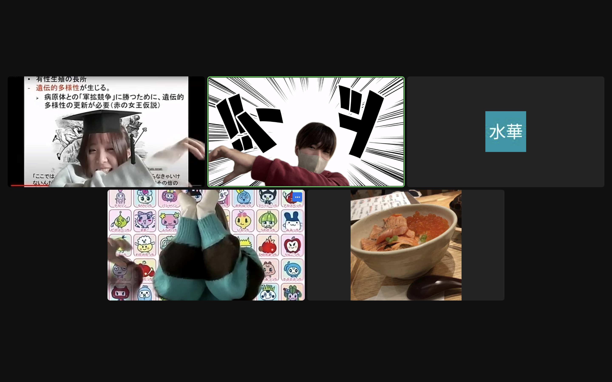

<!DOCTYPE html>
<html lang="ja">
​
<head>
  <meta charset="UTF-8">
  <meta name="viewport" content="width=device-width, initial-scale=1">
  <title>ポートフォリオサイト</title>
  <link href="https://cdn.jsdelivr.net/npm/bootstrap@5.3.0/dist/css/bootstrap.min.css" rel="stylesheet">
  <style>
    footer {
      text-align: center;
      padding: 20px;
      background-color: #fdfdfd;
    }
  </style>
</head>
​
<body>
  <nav class="navbar navbar-expand-lg navbar-light bg-light">
    <div class="container">
      <a class="navbar-brand" href="#">My Portfolio</a>
      <button class="navbar-toggler" type="button" data-bs-toggle="collapse" data-bs-target="#navbarNav"
        aria-controls="navbarNav" aria-expanded="false" aria-label="Toggle navigation">
        <span class="navbar-toggler-icon"></span>
      </button>
      <div class="collapse navbar-collapse" id="navbarNav">
        <ul class="navbar-nav ms-auto">
          <li class="nav-item">
            <a class="nav-link" href="#about">About</a>
          </li>
          <li class="nav-item">
            <a class="nav-link" href="#works">Works</a>
          </li>
        </ul>
      </div>
    </div>
  </nav>
​
  <section id="about" class="py-5">
    <div class="container">
      <div class="row">
        <div class="col-md-4 text-center">
          
        </div>
        <div class="col-md-8">
          <h3>About</h3>
          <table class="table">
            <tbody>
              <tr>
                <th scope="row">Name</th>
                <td>Yuta Magara</td>
              </tr>
              <tr>
                <th scope="row">Affiliation</th>
                <td>Faculty of Data Science, Musashino University</td>
              </tr>
              <tr>
                <th scope="row">Skills</th>
                <td>Python, HTML, css, SQL</td>
              </tr>
              <tr>
                <th scope="row">Instagram</th>
                <td>@zinky_winky_</td>
              </tr>
            </tbody>
          </table>
        </div>
      </div>
    </div>
  </section>
​
  <section id="works" class="py-5">
    <div class="container">
      <h3>Works</h3>
      <div class="row">
        <div class="col-md-4">
          <div class="card">
            
            <div class="card-body">
              <h5 class="card-title">趣味</h5>
              <p class="card-text">
                私の趣味はスポーツ観戦です。<br>
                特に野球とサッカー（フットボール）が大好きで、日本のプロ野球チームであるオリックス・バファローズと横浜DeNAベイスターズのファンです。<br>
                野球観戦では、両チームの勝利のために熱い声援を送り、いつか彼らが日本シリーズで対戦することを楽しみにしています。<br>
                サッカーでは、英国プレミアリーグのアーセナルFCとJリーグの浦和レッズを応援しています。アーセナルは長年のファンであり、その歴史やエキサイティングなプレースタイルに魅了されています。<br>
                また、浦和レッズは浦和が母の地元であることや熱烈なファンが多く、クラブの団結力に心を奪われています<br>
            </div>
          </div>
        </div>
        <div class="col-md-4">
          <div class="card">
            
            <div class="card-body">
              <h5 class="card-title">大学生活</h5>
              <p class="card-text">
                大学での経験が私の成長と興味の幅を広げる大きなきっかけとなりました。その中でも特筆すべきは、心理学への興味が高まり、メンタル心理カウンセラーの資格を取得したことです。心理学の奥深さに魅了され、人々のメンタルヘルスを支援することに強い使命感を抱きました。この資格取得は私の専門知識とスキルの基盤を築く重要な一歩となりました。

また、私はサッカーをプレーしたことはありませんが、興味深いスポーツ心理学の研究にも取り組みました。サッカーは社会現象として興味深く、特にその心理的側面にフォーカスした研究が私の関心を引きました。選手のメンタルトレーニングやチームの心理的結束力が、チームの成功にどれほど影響を与えるかについての研究は、私の心理学への興味を一層深めることにつながりました。

さらに、大学でのインターンシップ経験も私の成長に大きな影響を与えました。そこでの経験から、プログラマーとしてのスキルだけでなく、人との関わりやコミュニケーションの重要性を強く認識しました。その反動で、人と関わり合いながら楽しめる環境であるアトラクション施設にアルバイトとして入社し、オペレーション能力やコミュニケーション能力を磨く機会を得ました。

大学生活は私にとって、学問的探求と個人的成長の場であり、これからも自己の専門知識を深め、スキルを磨くことで、社会への貢献を目指していきます。
              </p>
            </div>
          </div>
        </div>
        <div class="col-md-4">
          <div class="card">
            
            <div class="card-body">
              <h5 class="card-title">研究</h5>
              <p class="card-text"><b>サッカー選手のプレイスタイルを特徴付けるデータ駆動型アプローチ</b>
                <br>①非負値行列因子分解(NMF)による選手ベクトル構築: 選手のアクションデータから非負値行列因子分解(NMF)を適用し、選手ベクトルを得るための特徴を抽出しました。この選手ベクトルによって、選手のプレイスタイルを客観的に特徴付けする手法を提案しました。
                <br>②データ駆動型のゴール期待値算出: データソースとして膨大な量の過去のシュートの結果を収集し、トラッキングデータを元にシュートの位置やプレーの局面などを考慮してゴール期待値を算出する方法を開発しました。これにより、選手のシュートの相対的な難易度や質を数値化し、詳細なパフォーマンス理解が可能となります
              </p>
            </div>
          </div>
        </div>
        <div class="col-md-4">
          <div class="card">
            
            <div class="card-body">
              <h5 class="card-title">インターン</h5>
              <p class="card-text">インターン先はスマートフォンアプリ、Webシステム、IT基盤、組込みシステム開発をする総合型開発企業です。</p>
            </div>
          </div>
        </div>
      </div>
    </div>
  </section>
​
  <footer class="mt-5">
    <div class="container">
      <p>&copy; 2023 Yuta Magara</p>
    </div>
  </footer>
​
  <script src="https://cdn.jsdelivr.net/npm/bootstrap@5.3.0/dist/js/bootstrap.bundle.min.js"></script>
</body>
​
</html>
